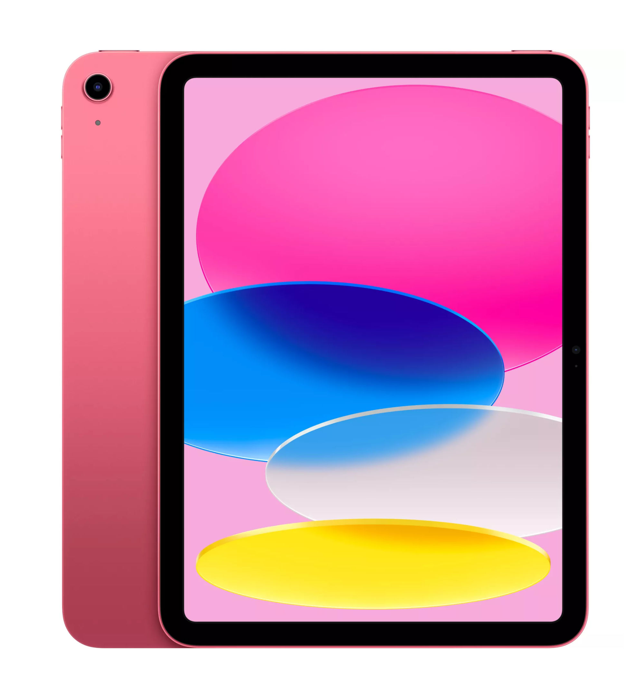

IPAD
Description
L’iPad 10,9 pouces (10ᵉ génération) d’Apple, sorti en 2022, présente un design moderne avec un grand écran Liquid Retina de 10,9 pouces et des bords plats. Il intègre le bouton Touch ID sur le dessus et se recharge via un port USB-C. Propulsé par la puce A14 Bionic, il offre d’excellentes performances pour le multitâche, les jeux et la création. Il possède une caméra arrière de 12 Mpx et une caméra avant ultra grand-angle de 12 Mpx placée sur le bord horizontal, idéale pour les appels vidéo.
| Description | Image | Prix |
| IPAD 5 |  | 499.99 € |